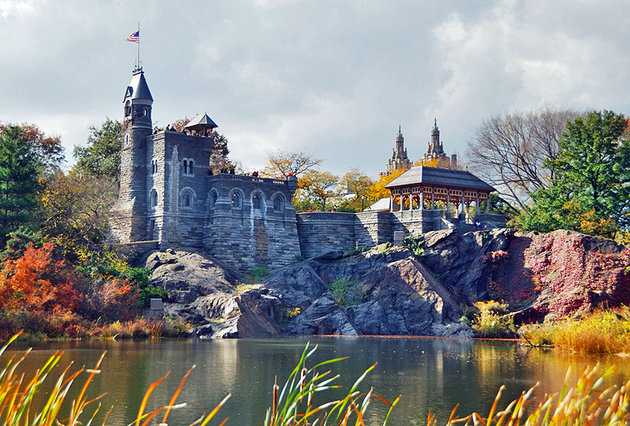

With so much to do making a decison is difficult in the big apple so lets get to it!
One World Trade Center
One World Trade Center (also known as One WTC or Freedom Tower[note 1]) is the main building of the rebuilt World Trade Center complex in Lower Manhattan, New York City. One WTC is the tallest building in the United States, the tallest building in the Western Hemisphere, and the seventh-tallest in the world. The supertall structure has the same name as the North Tower of the original World Trade Center, which was destroyed in the terrorist attacks of September 11, 2001. The new skyscraper stands on the northwest corner of the 16-acre (6.5 ha) World Trade Center site, on the site of the original 6 World Trade Center. The building is bounded by West Street to the west, Vesey Street to the north, Fulton Street to the south, and Washington Street to the east.

Statue of Liberty
The Statue of Liberty (Liberty Enlightening the World; French: La Liberté écl airant le monde) is a colossal neoclassical sculpture on Liberty Island in New York Harbor in New York, in the United States. The copper statue, a gift from the people of France to the people of the United States, was designed by French sculptor Frédéric Auguste Bartholdi and its metal framework was built by Gustave Eiffel. The statue was dedicated on October 28, 1886.

Central Park
Central Park is an urban park in Manhattan, New York City, located between the Upper West Side and the Upper East Side. Central Park is the most visited urban park in the United States, with an estimated 37.5–38 million visitors annually, and one of the most filmed locations in the world. Central Park is the fifth-largest park in New York City.
Times square
Times Square is a major commercial intersection, tourist destination, entertainment center and neighborhood in the Midtown Manhattan section of New York City at the junction of Broadway and Seventh Avenue. It stretches from West 42nd to West 47th Streets. Brightly adorned with billboards and advertisements, Times Square is sometimes referred to as "The Crossroads of the World", "The Center of the Universe", "the heart of The Great White Way", and "the heart of the world". One of the world's busiest pedestrian areas, it is also the hub of the Broadway Theater District[9] and a major center of the world's entertainment industry. Times Square is one of the world's most visited tourist attractions.

Grand Central Terminal=
Gand Central Terminal is a beautiul Art Deco building. It is highly accessible (as it is a train terminal) by many subway lines. Be sure to look out for the main concourse and the clock in the center of it. For more info, click here
 show/hide map
show/hide map